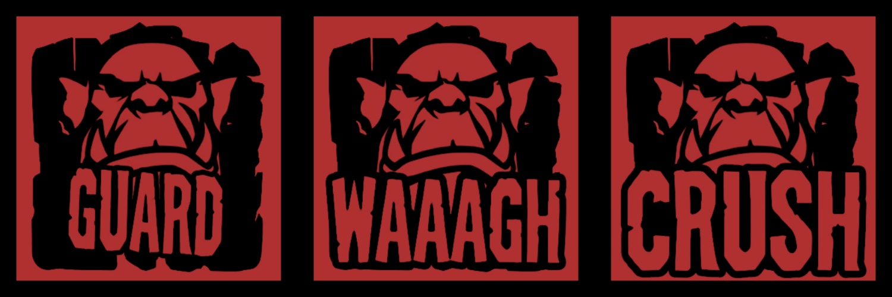
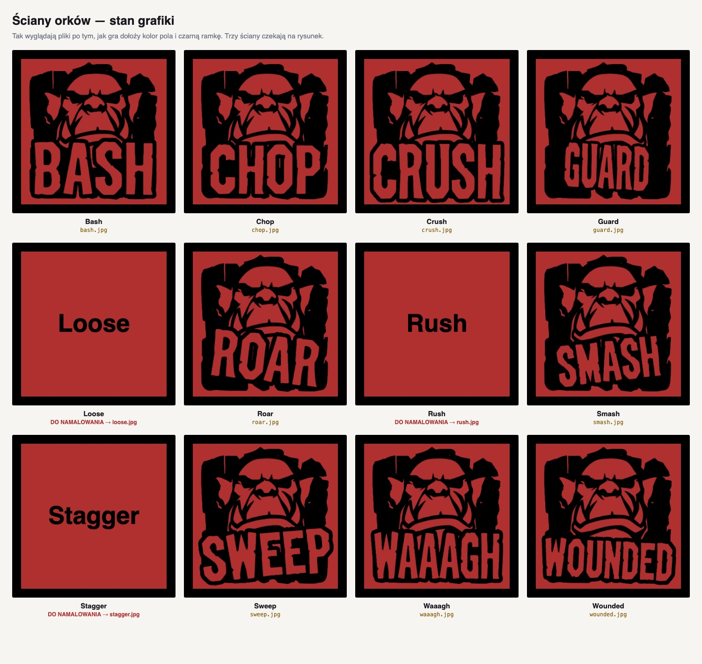
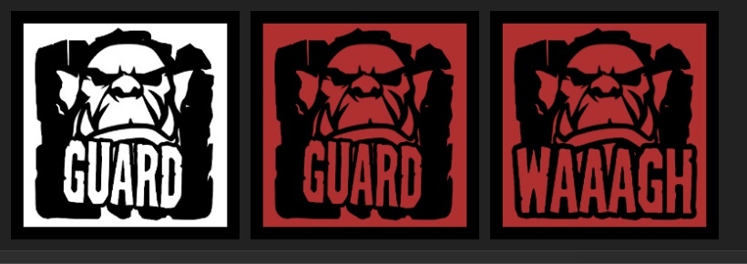

Lista — orkowie
{kind=link}
Dwanaście ścian, dziewięć zrobionych.
Każda jednostka to jedna sześcienna kość. Ściana leżąca na wierzchu jest tym, co ta jednostka potrafi w tej chwili. Nie rzucasz kością — przewracasz ją, a ona staje się czymś innym.

Kość stoi na planszy i jest żołnierzem. Ściana na górze — tarcza, miecz, napięty łuk — to jego aktualna zdolność, nie liczba i nie statystyka. Żeby go przesunąć, przewracasz kość na sąsiednie pole, więc przyjeżdża tam pokazując coś innego.
Nie ma kart, żetonów ani znaczników obrażeń. Rana to kość obrócona na ścianę rany, śmierć to kość zdjęta ze stołu. Cały stan bitwy widać na stole, bo nie ma go gdzie indziej trzymać.
W grze nie ma losowości — kośćmi nigdy się nie rzuca. Kość jest tu fizycznym automatem stanów: sześć ścian, a geometria sześcianu decyduje, do których z nich da się dojść z miejsca, w którym stoisz.
Przechyl kość kilka razy w jedną stronę, a przejdzie przez trzy ściany i wróci na początek. Kierunki są cztery, więc jeden przechył daje wybór spośród czterech różnych ścian — a które to cztery, zależy od tego, jak ta konkretna kość jest zadrukowana. Dwie jednostki o tych samych zdolnościach, ale innym ich rozłożeniu na sześcianie, gra się zupełnie inaczej. Projekt jednostki to nie lista cech, tylko topologia.
Plansza 6×6, po pięć kości na stronę. Każda kość ma jedną darmową akcję na turę — krok albo obrót. Punkty akcji (trzy na całą warbandę) kupują wyłącznie przewracanie kości i ataki.
Stąd decyzja, którą podejmujesz co turę: iść na wroga z tym, co akurat masz na wierzchu, albo poświęcić turę, żeby dojść z tym, czego naprawdę chcesz. Chodzenie jest darmowe, przezbrojenie jest całą ekonomią gry.
Walka nie ma punktów życia. Trafienie obraca kość: podniesiona tarcza zatrzymuje cios od frontu, ale zostaje strącona, następne trafienie rani, kolejne zabija. Trzy ciosy od przodu, dwa z boku — więc to, w którą stronę kość patrzy, decyduje i kogo możesz uderzyć, i ile kosztuje cios w ciebie.
Wygrywa się na dwa sposoby: trzymając kapliczki na planszy albo wybijając warbandę przeciwnika. Symulacja mówi, że obie drogi są żywe — połowa partii kończy się jednym sposobem, połowa drugim.
W grze jest 60 ścian — dziesięć kości po sześć. Ale różnych obrazków jest tylko 24, po dwanaście na frakcję, bo te same zdolności powtarzają się na wielu kościach.
| Frakcja | Zdolności, które trzeba narysować (i na ilu kościach siedzą) |
|---|---|
| Orkowie | Guard 5 · Wounded 5 · Chop 4 · Stagger 4 · Roar 3 · Bash 2 · Rush 2 · Crush · Loose · Smash · Sweep · Waaagh |
| Ludzie | Advance 5 · Guard 5 · Wounded 5 · Stagger 4 · Strike 3 · Brace 2 · Bash · Command · Loose · Riposte · Sweep · Thrust |
I tak musi być: gracz czyta planszę z drugiej strony stołu, więc ta sama zdolność ma wyglądać wszędzie tak samo. Narysowany raz Guard pojawia się na wszystkich pięciu kościach frakcji, które go mają.
Stan na dziś: orkowie mają 9 z 12 ścian (rysunki poniżej). Brakuje Loose, Rush, Stagger. Ludzie nie mają jeszcze ani jednej — grają na czerwono-czarnych… to znaczy na niebieskich polach z samym napisem.

Rysujesz czarnym tuszem na białym tle. Kolor dokłada gra przy wczytaniu: biel staje się barwą frakcji, czerń zostaje czernią, a wokół każdej ściany rysuje się czarna ramka.

| Format | JPG albo PNG, kwadrat, 512×512 albo więcej |
|---|---|
| Nazwa pliku | nazwa zdolności małymi literami — guard.jpg, waaagh.jpg |
| Tło | białe (gra zamieni je na kolor frakcji) |
| Nazwa na rysunku | tak — nazwa zdolności jest częścią ilustracji, jak w gotowych orkach |
| Orientacja | każdy kwadrat rysujesz pionowo, nic nie obracaj |
Orientacja została zmierzona wprost z geometrii, nie zgadnięta. Cztery ściany boczne mają górę obrazka na górze kości. Górna ściana zachowuje się jak mapa oglądana z lotu ptaka — góra obrazka wskazuje w głąb planszy. Spód analogicznie. W praktyce: rysujesz normalnie i wszystko siedzi jak trzeba.
Ściana bez pliku nie psuje gry. Pokazuje się jako kolorowe pole z samym napisem, więc możesz oddawać rysunki po jednym i od razu widzieć je w działającym prototypie.
Listy do odhaczenia — dwanaście kafelków na frakcję, z liczbą kości, na których każda zdolność siedzi. Czyli od czego zacząć, żeby najszybciej zobaczyć efekt.
Dwanaście ścian, dziewięć zrobionych.
Dwanaście ścian, wszystkie do wzięcia.
Rozłożony sześcian: co na której ścianie i co wypada po przechyle.
To samo dla oszczepnika, który ma ścianę strzału.
Siatki przydają się mniej do samego rysowania, a bardziej do zobaczenia sąsiedztwa ścian. W tej grze to sąsiedztwo jest treścią projektu jednostki: czy Ukrycie stoi obok Strzału, czy naprzeciw niego, decyduje o tym, czy łucznik jest śliskim dywersantem, czy kruchym snajperem. Te same sześć słów, dwie zupełnie różne postacie.
Wszystkie dziesięć siatek jest w repozytorium w katalogu art/uv/.
Generują się z kodu gry, więc nigdy nie rozjadą się z zasadami.
Działa pełna partia od rozstawienia do zwycięstwa, z przeciwnikiem komputerowym, przeciw któremu można zagrać w przeglądarce. Każda liczba w zasadach została zmierzona, nie wyczuta — punkty akcji, rozmiar planszy, wielkość warbandy, próg punktowy. Za każdą stoi odrzucona wersja i symulacja, która ją zabiła.
Co to znaczy dla ilustratora: projekt jest na etapie, na którym grafika zmienia grę, a nie tylko ją ubiera. Kość jest produktem — jeśli ma być wygrawerowana i zadrukowana, symbol musi czytać się przez stół przy boku około 25 mm. To jest problem projektowy, nie dekoracyjny.
Teza produktu: nowa frakcja to inne rozłożenie sześciu ścian, a nie ta sama kość w innym kolorze. Ponieważ sąsiedztwo ścian decyduje o tym, jakie sekwencje w ogóle istnieją, przeprojektowanie siatki zmienia sposób gry bez dopisywania choćby jednej zasady.
| Frakcja | Co łamie | Stan |
|---|---|---|
| Orkowie | groźni również w bok — jak się nie potoczą, coś w ciebie celuje | 9/12 ścian |
| Ludzie | formacja i drugi szereg; nagradzają ustawienie | 0/12 ścian |
| Krasnoludy | nie do zepchnięcia, garda kryje też flankę, wolne | szkic |
| Leśne elfy | teren i ukrycie, zmiana stanu bez utraty tempa, szkło | szkic |
| Gobliny | najtańsze i najliczniejsze, giną od jednego trafienia | szkic |
Docelowo dochodzą jednostki-potwory (górski troll krasnoludów: dwie ściany tarczy i dwie rany, cztery ciosy do zabicia, ale tylko dwie ściany na umiejętności — odporny i głupi) oraz pojedyncze kości jako dodatki. Kość to dobry produkt do sprzedaży osobno: mała, tania w produkcji, kolekcjonerska i — w odróżnieniu od figurki — nie wymaga sklejania ani malowania.
Najbliższa robota to trzy brakujące ściany orków (Loose, Rush, Stagger) i dwanaście ścian ludzi. Piętnaście obrazków i obie armie w prototypie są kompletne.
| Grywalny prototyp | piotrek1115.github.io/sixth-face — kliknij 🧠 vs AI, żeby zagrać przeciw komputerowi |
|---|---|
| Kod i szablony | github.com/piotrek1115/sixth-face — szablony w art/uv/, brief w art/README.md |
| Gdzie wrzucać pliki | public/art/faces/<frakcja>/<zdolność>.jpg |
Sixth Face · prototyp · Piotr Kujko
{kind=link}
{kind=link}
{kind=link}